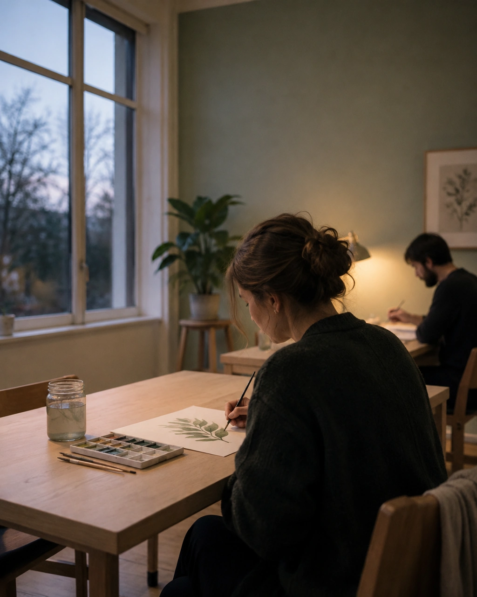
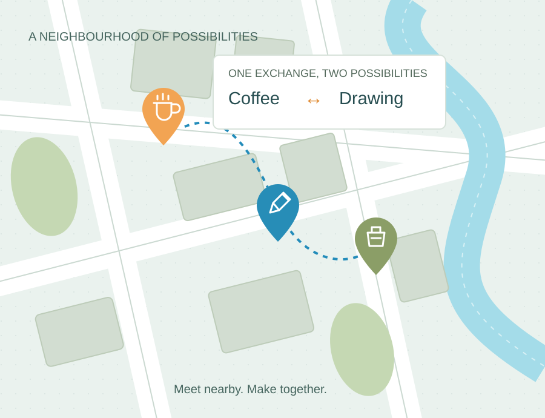
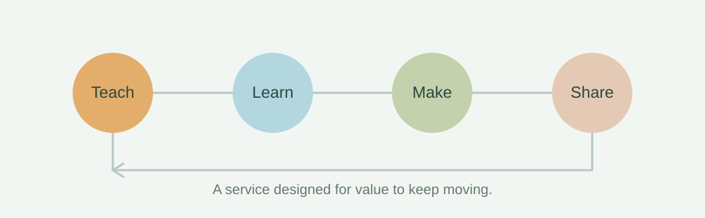
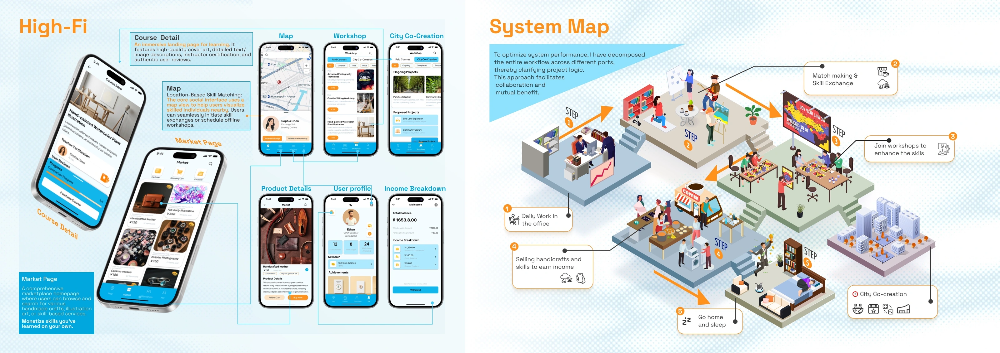

CITYWEAVE / SERVICE DESIGN
Cityweave
Good at
something.
Better together.
A neighbourhood where what you know becomes something you can share.


Illustrative service scenario.
THE OPPORTUNITY
A skill can be a hobby.
It can also be a connection.
Cityweave connects local learning, skill exchange, handmade work and shared projects into one service concept.
01 / MAKE THE FIRST STEP SMALLER
Start nearby.
Find a reason to meet.
Research pointed toward accessible, in-person learning. The map brings people and their skills into view, while workshops offer a clear next step.
02 / MAKE SOMETHING, TOGETHER
Less searching.
More making.
A course page brings the activity, teacher and participation options together, so someone can decide whether it fits their evening.
03 / LET THE VALUE KEEP MOVING
Learn it. Make it.
Pass it on.

- Teach
- Learn
- Make
- Share
The makers’ market extends the experience beyond the first class. A learned skill can become a handmade object, a service, or something another neighbour can learn.
A connected experience
Discover → Learn → Make → Share
04 / A SERVICE THAT GROWS WITH ITS PEOPLE
From one exchange
to shared city life.
Learners, makers and spaces are considered together. City Co-Creation gives skills another destination: shared local projects. Interface people, prices and balances are illustrative.
Explore the original interfaces and service map

A service system concept connecting people through what they can teach, make and share.